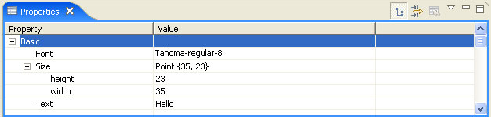
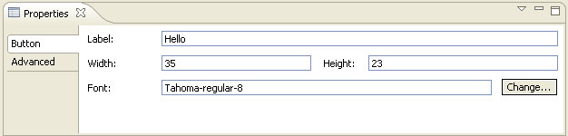
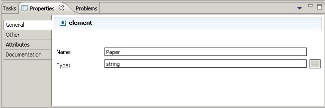
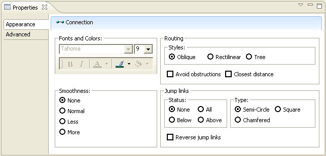
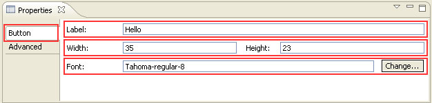
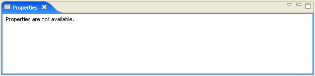
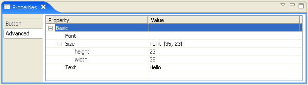

Copyright © 2006 International Business Machines Corp.
| Eclipse Corner Article |

Summary
The Eclipse workbench provides a properties view which is used to view (and/or edit) properties of a selected item. In this article, you will learn how to use the tabbed properties view to create an enhanced user interface for the properties view.
By Anthony Hunter, IBM
February 19, 2006
The Eclipse workbench provides a properties view, which is described in detail in the article Take control of your properties. The default user interface is table with property and value pairs, and the value being modified using a standard dialog cell editor.
The workbench provides extensions to define a custom user interface for the properties view. By making use of thise extensions, the tabbed properties view has been created.
The tabbed properties view allows you to create any user interface for your properties. In addition, you can create user interfaces for elements that do not implement an IPropertySource. Indeed the properties view can be extended to view any data for the selection in your workbench part.
As an example, here was the properties view for the example in the Take control of your properties.

The tabbed properties view can be used to create a different user interface.

The tabbed properties view was authored by IBM and was used internally in the IBM Rational Software Architect, IBM WebSphere Integration Developer, and other IBM products based on the Eclipse platform.
The tabbed properties view was contributed to Eclipse open source and became part of the Eclipse Web Tools Platform project.
With Eclipse 3.2 M5, the tabbed properties view has moved to the Eclipse core platform.
The Tabbed Properties View is implemented using the org.eclipse.ui.views.properties.tabbed
plug-in.
Here are some other examples of the tabbed properties view in action.
This example comes from the XML Schema Editor available in Eclipse WTP version 0.7

This example comes from the Logic Shapes example available in Eclipse GMF version 1.0 M4.

This example comes from the UML Modeler available in IBM Rational Software Architect version 6.0
This example comes from the BPEL Editor available in IBM WebSphere Integration Developer version 6.0
This example comes from the HTML Editor available in IBM Rational Web Software Developer for WebSphere Software version 6.0
The tabbed properties view is configured by implementing three extension. Each tabbed properties view is composed of a property contributor who contributes one or more property tabs. Each property tab is filled with one or more sections. The highlighted example below illustrates how they are organized. For the current selection, the property contributor has enabled two tabs in the tabbed properties view, Button and Advanced. The Button tab is highlighted and is the active tab. The Button tab has enabled three active sections highlighted on the right.

A section is simply a widget or a composite containing a group of widgets that maps to one property, multiple properties or some concept independent of the properties of a selection.
The org.eclipse.ui.views.properties.tabbed.PropertyContributor
extension point is the key for your tabbed properties view. It most
importantly identifies the unique contributor identifier for your tabs
and sections. Most frequently, this identifier matches the unique
workbench part id that is contributing the tabbed properties view.
Note that a property contributor can be shared among several workbench parts. For example, an application may have an explorer view, editor and outline whose selections share a common set of properties. In this case, all three workbench parts can share the same tabbed properties view as identified by the unique contributor identifier.
A workbench part cannot make use of two or more property
contributors. It can identify a single property contributor by
implementing the ITabbedPropertySheetPageContributor
interface.
The PropertyContributor extension point also defines the
following attributes:
typeMapper | The class that implements the type mapper. |
labelProvider | The class that implements the label provider for the title bar. |
propertyCategory | One or more category attributes used to group the tabs. |
The org.eclipse.ui.views.properties.tabbed.PropertyTabs
extension point describes the tabs for a contributor. Each tab belongs
to one contributor as identified by its unique contributor identifier.
The PropertyTabs extension point can define one or more
tabs through the PropertyTab attribute.
A ProperyTab defines the following attributes:
id | The unique id for the tab. |
label | The label to be displayed on the tab. |
category | The category from the PropertyContributor extension point used to group tabs. |
afterTab | When there is more than one tab in a category, tabs are sorted by the afterTab attribute. |
image | The optional image to display on the tab. |
indented | true if the tab is
indented. |
The org.eclipse.ui.views.properties.tabbed.PropertySections
extension point describes the sections for a contributor. Each section
belongs to one configuration as identified by its unique contributor
identifier.
The PropertySections extension point can define one or
more sections through the PropertySection attribute. Each
section belongs to one tab as identified by its unique tab identifier.
The PropertySection defines the following attributes:
id | The unique id for the section. |
tab | The unique tab id in which this section appears. |
class | The class that implements the section |
afterSection | When there is more than one section in a tab, sections are sorted by the afterSection attribute. |
filter | The class that implements a section filter. |
enablesFor | a value indicating the selection
count which must be met to enable the section. If specified and the
condition is not met, the section is filtered. If omitted, the section
enablement is not affected. The following attribute formats are currently supported: n - a precise number of items selected. For example:
enablesFor=" 1" enables the section only when 1 item is selected |
The PropertySection also defines one or more input
type attributes. Each type is a class or interface
that the selection must match for the section to be displayed on the
tab.
Let us now take the example from Take control of your properties and make it use the tabbed property view, as we first showed at the start of this article. The source code for this example can be found the CVS repository.
Before proceeding, we add the dependency to the org.eclipse.ui.views.properties.tabbed
plug-in in the required plug-ins list.
A workbench part that provides a tabbed property view needs to
implement the ITabbedPropertySheetPageContributor
interface. This interface has the single method getContributorId()
that must be implemented, which returns the contributor identifier for
your configuration. We will simply use the view identifier and implement
the method as below:
public String getContributorId() {
return getSite().getId();
}
We also need to tell the workbench to use the tabbed property view.
Each workbench part can define its own custom property sheet page by
providing an adaptable for IPropertySheetPage. The
workbench will call your view's getAdapter() method and ask
for an IPropertySheetPage. It is at this point that we
tell Eclipse to use our tabbed property sheet page.
public Object getAdapter(Class adapter) {
if (adapter == IPropertySheetPage.class)
return new TabbedPropertySheetPage(this);
return super.getAdapter(adapter);
}
Next we add the PropertyContributor extension to our
plug-in:
<extension point="org.eclipse.ui.views.properties.tabbed.propertyContributor"><propertyContributor contributorId="mview.views.SampleView"/> </extension>
 We need to define the contributor
identifier, which is the view identifier in our case.
We need to define the contributor
identifier, which is the view identifier in our case.
At this point we can now run our plug-in and when you look at the properties view, you will see "Properties are not available".
The tabbed property sheet page has successfully been implemented. The page took the unique identifier and looked up the tabs and sections that match the current selection ("button") and did not find any to display. So you see the message "Properties are not available".

The next stage is to define tabs and sections.
The first thing we need to do before adding tabs is to define a
property category in our PropertyContributor extension.
<extension point="org.eclipse.ui.views.properties.tabbed.propertyContributor">
<propertyContributor contributorId="mview.views.SampleView">
<propertyCategory category="sample"/>
</propertyContributor>
</extension>
 We have added one category called
sample.
We have added one category called
sample.
Next we can add the PropertyTabs extension to our
plug-in.
<extension point="org.eclipse.ui.views.properties.tabbed.propertyTabs">
<propertyTabs contributorId="mview.views.SampleView">
<propertyTab
 category="sample"
id="mview.ButtonTab"
label="Button"/>
<propertyTab
category="sample"
id="mview.ButtonTab"
label="Button"/>
<propertyTab
 afterTab="mview.ButtonTab"
category="sample"
id="mview.AdvancedTab"
afterTab="mview.ButtonTab"
category="sample"
id="mview.AdvancedTab"
 label="Advanced"/>
</propertyTabs>
</extension>
label="Advanced"/>
</propertyTabs>
</extension>
We have defined two tabs in our example by providing two propertyTab
attributes.
We must provide the tab id, category and label for each tab.
Our tabs are named button ( ) and advanced (
) and advanced ( ).
).
 We also define the Advanced tab will
be displayed after the Button tab.
We also define the Advanced tab will
be displayed after the Button tab.
 Both our tabs are in our sample
category.
Both our tabs are in our sample
category.
Finally we can add the PropertySections extension point to our plug-in.
<extension point="org.eclipse.ui.views.properties.tabbed.propertySections">
<propertySections contributorId="mview.views.SampleView">
<propertySection
class="mview.views.LabelSection"
id="mview.LabelSection"
tab="mview.ButtonTab">
<input type="mview.views.ButtonElement"/>
</propertySection>
<propertySection
afterSection="mview.LabelSection"
class="mview.views.SizeSection"
id="mview.SizeSection"
tab="mview.ButtonTab">
<input type="mview.views.ButtonElement"/>
</propertySection>
<propertySection
afterSection="mview.SizeSection"
class="mview.views.FontSection"
id="mview.FontSection"
tab="mview.ButtonTab">
<input type="mview.views.ButtonElement"/>
</propertySection>
<propertySection
class="org.eclipse.ui.views.properties.tabbed.AdvancedPropertySection"
id="mview.AdvancedSection"
tab="mview.AdvancedTab">
<input type="mview.views.ButtonElement"/>
</propertySection>
</propertySections>
</extension>
All our sections apply to the input type ButtonElement.
The button tab is given three sections, the advanced tab one section.
Each section has the tab identifier, unique identifier for the section and the class that implements the section.
Here is the code for our label section.
/*******************************************************************************
* Copyright (c) 2006 IBM Corporation and others.
* All rights reserved. This program and the accompanying materials
* are made available under the terms of the Eclipse Public License v1.0
* which accompanies this distribution, and is available at
* http://www.eclipse.org/legal/epl-v10.html
*
* Contributors:
* IBM Corporation - initial API and implementation
*******************************************************************************/
package mview.views;
import org.eclipse.jface.util.Assert;
import org.eclipse.jface.viewers.ISelection;
import org.eclipse.jface.viewers.IStructuredSelection;
import org.eclipse.swt.SWT;
import org.eclipse.swt.custom.CLabel;
import org.eclipse.swt.events.ModifyEvent;
import org.eclipse.swt.events.ModifyListener;
import org.eclipse.swt.layout.FormAttachment;
import org.eclipse.swt.layout.FormData;
import org.eclipse.swt.widgets.Composite;
import org.eclipse.swt.widgets.Text;
import org.eclipse.ui.IWorkbenchPart;
import org.eclipse.ui.views.properties.IPropertySource;
import org.eclipse.ui.views.properties.tabbed.AbstractPropertySection;
import org.eclipse.ui.views.properties.tabbed.ITabbedPropertyConstants;
import org.eclipse.ui.views.properties.tabbed.TabbedPropertySheetPage;
/**
* The Label section on the Button tab.
*
* @author Anthony Hunter
*/
public class LabelSection
extends AbstractPropertySection {
private Text labelText;
private ButtonElement buttonElement;
private ModifyListener listener = new ModifyListener() {
public void modifyText(ModifyEvent arg0) {
ButtonElementProperties properties = (ButtonElementProperties) buttonElement
.getAdapter(IPropertySource.class);
properties.setPropertyValue(ButtonElementProperties.PROPERTY_TEXT,
labelText.getText());
}
};
public void createControls(Composite parent,
TabbedPropertySheetPage aTabbedPropertySheetPage) {
super.createControls(parent, aTabbedPropertySheetPage);
Composite composite = getWidgetFactory()
.createFlatFormComposite(parent);
FormData data;
labelText = getWidgetFactory().createText(composite, ""); //$NON-NLS-1$
data = new FormData();
 data.left = new FormAttachment(0, STANDARD_LABEL_WIDTH);
data.right = new FormAttachment(100, 0);
data.left = new FormAttachment(0, STANDARD_LABEL_WIDTH);
data.right = new FormAttachment(100, 0);
 data.top = new FormAttachment(0, ITabbedPropertyConstants.VSPACE);
labelText.setLayoutData(data);
labelText.addModifyListener(listener);
CLabel labelLabel = getWidgetFactory()
.createCLabel(composite, "Label:"); //$NON-NLS-1$
data = new FormData();
data.left = new FormAttachment(0, 0);
data.right = new FormAttachment(labelText,
-ITabbedPropertyConstants.HSPACE);
data.top = new FormAttachment(labelText, 0, SWT.CENTER);
labelLabel.setLayoutData(data);
}
public void setInput(IWorkbenchPart part, ISelection selection) {
super.setInput(part, selection);
Assert.isTrue(selection instanceof IStructuredSelection);
Object input = ((IStructuredSelection) selection).getFirstElement();
Assert.isTrue(input instanceof ButtonElement);
this.buttonElement = (ButtonElement) input;
}
public void refresh() {
labelText.removeModifyListener(listener);
ButtonElementProperties properties = (ButtonElementProperties) buttonElement
.getAdapter(IPropertySource.class);
labelText.setText(properties.strText);
labelText.addModifyListener(listener);
}
}
data.top = new FormAttachment(0, ITabbedPropertyConstants.VSPACE);
labelText.setLayoutData(data);
labelText.addModifyListener(listener);
CLabel labelLabel = getWidgetFactory()
.createCLabel(composite, "Label:"); //$NON-NLS-1$
data = new FormData();
data.left = new FormAttachment(0, 0);
data.right = new FormAttachment(labelText,
-ITabbedPropertyConstants.HSPACE);
data.top = new FormAttachment(labelText, 0, SWT.CENTER);
labelLabel.setLayoutData(data);
}
public void setInput(IWorkbenchPart part, ISelection selection) {
super.setInput(part, selection);
Assert.isTrue(selection instanceof IStructuredSelection);
Object input = ((IStructuredSelection) selection).getFirstElement();
Assert.isTrue(input instanceof ButtonElement);
this.buttonElement = (ButtonElement) input;
}
public void refresh() {
labelText.removeModifyListener(listener);
ButtonElementProperties properties = (ButtonElementProperties) buttonElement
.getAdapter(IPropertySource.class);
labelText.setText(properties.strText);
labelText.addModifyListener(listener);
}
}
A section in a tab is represented by the ISection
interface. Clients should extend AbstractPropertySection
rather than implementing ISection directly.
When implementing a section, there are three methods a section must implement:

ISection.createControls()
creates the controls for the section.

ISection.setInput() is
where the section is given the selection from the contributing workbench
part.

ISection.refresh() is
where the section refreshes the contents of the controls based on the
input.
Standard Eclipse SWT widgets are used in ISection.createControls().
Any widget that can be hosted in an SWT Composite can be displayed in a
section.
Clients should take advantage of the widget factory provided by the
framework to achieve a common look between property sections. The widget
factory is available from AbstractPropertySection.getWidgetFactory()
( ).
).
AbstractPropertySection defines several additional items
for an ISection that implementers need to be aware of.
In our example, we had three sections, button, size and font. Since
sections are not aware of each other, it is difficult to know how to
line up the labels for sections on the left hand side of the composite.
For this reason, we make use of AbstractPropertySection.STANDARD_LABEL_WIDTH
( ).
).
We make use of ITabbedPropertyConstants ( ) to align the controls in the sections.
) to align the controls in the sections.
ISection.getMinimumHeight() returns the minimum height
needed by this section. AbstractPropertySection returns a
default value of SWT.DEFAULT to indicate that no minimum
height is defined.
ISection.shouldUseExtraSpace() determines whether a
section would like extra height space in case
there is some left. Normally this is only true when the section is the
last to be displayed on a tab or is the only section on a tab. AbstractPropertySection
returns false by default.
The lifecycle of a section is as follows:
ISection.createControls()ISection.setInput()ISection.aboutToBeShown()ISection.refresh()ISection.aboutToBeHidden()ISection.dispose()Implementers of this class should be aware that a section instance
might be reused for different input objects (as long as they are valid
section inputs). It means that ISection.setInput can be
called at any time between ISection.createControls and
ISection.dispose.
When an input change event occurs, such as a tab selection or a workbench selection change, a section is sent:
ISection.setInput()ISection.refresh()When a part activation event occurs, such as the workbench part activation event, a section is sent:
ISection.setInput()ISection.aboutToBeShown()ISection.refresh()ISection.setInput()ISection.refresh()This is because both a tab selection event and an input selection event have occurred.
When a property sheet page is visible, the model could be changed
outside of the property view. In this case we want to add a listener so
that we can update the visible controls based on new model values. This
is done using ISection.aboutToBeShown().
ISection.aboutToBeShown() notifies the section that its
controls are about to be shown. It is expected that sections enable
domain related functions such as adding listeners.
ISection.aboutToBeHidden() notifies the section that its
controls are about to be hidden and should disable domain related
functions such as removing listeners.
Since the controls are not yet visible in ISection.aboutToBeShown(),
the section should wait for ISection.refresh() to be
called to updating the section controls.
The listener when receiving a change event should make use of ISection.refresh()
to update the controls for the section.
When we have complex applications with multiple IPropertySource,
we may not want to provide custom tabs and sections for all the
properties available for a selection. Clients can reuse the AdvancedPropertySection
class to display the "original" table format properties view.
As an example, here is the advanced tab for our exampling showing the "original" properties view from the Take control of your properties.

The PropertyContributor extension point defines an
optional typeMapper attribute. This attribute defines a
type mapper class that implements ITypeMapper or preferably
extends the AbstractTypeMapper class.
When a set of objects are selected in the workbench part, the tabbed
properties view matches the type of these objects with the input
type attributes defined in the PropertySections
extensions. In some cases, the selection will be user interface objects,
such as tree nodes. A type mapper is used to map between these user
interface objects and a domain model object.
An example for a type mapper for org.eclipse.jface.viewers.TreeNode
where we are interested in the value of the tree node:
public class TypeMapper
extends AbstractTypeMapper {
public Class mapType(Object object) {
if (object instanceof TreeNode) {
return ((TreeNode) object).getValue().getClass();
}
return super.mapType(object);
}
}
A second example of a type mapper can be found in the tabbed
properties logic example based on Eclipse
GEF. Elements on a diagram are all EditPart. We are
interested in the type of the underlying model:
public class LogicElementTypeMapper
extends AbstractTypeMapper {
public Class mapType(Object object) {
if (object instanceof EditPart) {
return ((EditPart) object).getModel().getClass();
}
return super.mapType(object);
}
}
The PropertySection extension point defines an optional filter
attribute. This attribute defines a filter for a section. A filter is a
class that implements the org.eclipse.jface.viewers.IFilter
interface. It is used to filter a section from display for a selection
even though it meets the input type criteria.
Note that a filter is used to override the type mapper and input for
the selection. When a filter is specified, the type mapper and input are
ignored for that section. In the case where filter is
specified, input type need not be provided.
The PropertyContributor extension point defines an
optional labelProvider attribute. This attribute defines a
label provider for a title bar for the tabbed properties view. The title
bar is used as a usability enhancement to display information about the
current selection in the contributing workbench part. You can display
the icon and name of the selected object. Frequently, groups put the
type of the selected objects in brackets and indicate the number of
objects selected.
Tabs are ordered by the categories defined by the PropertyContributor
extension. When there is more than one tab in a category, tabs are
sorted using the afterTab attribute in the PropertyTab
extension.
When there is more than one section on a tab, sections are sorted
using the afterSection attribute in the PropertySection
extension.
The PropertySection extension point defines an optional enablesFor
attribute. This attribute will cause the section to be enabled for a
specific selection count. Most frequently this attribute is set to "1"
to filter a section when multiple objects are selected.
Clients can extend the property configuration for a workbench part by implementing tab and section extensions in their plug-in. There are times when it is desirable for clients provide a top level property contributor configuration as well. For example, a project explorer may have multiple clients contributing elements to a tree. The core project explorer will define a properties configuration with a unique contributor identifier. Clients can add tabs and sections by using the same contributor identifier in their plug-in. If a client already has tabs and sections with a different contributor identifier that matches their editor, it would not be desirable to have to copy all the extensions to display when its custom tree nodes are selected
It is possible to have the elements in a selection implement or adapt
to the ITabbedPropertySheetPageContributor interface. If
all the elements in a selection return the same identifier to getContributorId()
for a selection, then that alternate property configuration will be
displayed in the properties view for that selection.
There are additional examples available that demonstrate the use of the tabbed properties view:
Tabbed Properties Tests View - a JUnit tests plug-in with a sample view that demonstrates examples of every option available through the tabbed properties view extension points.
Tabbed Properties Logic Example - tabbed properties view based on the Eclipse GEF Logic Example
Tabbed Properties Hockey League Example - tabbed properties view with an Eclipse EMF Hockey League model
In this article, you have seen how to use the tabbed properties view to create an enhanced user interface for the properties view.